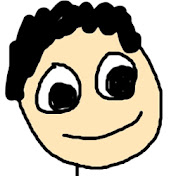

Nikola Škrabálková
Children's Face Painting, Photography & Art
Face Painting
Bring fun and excitement to any event with Nikola's face painting services. Specializing in children's parties and festivals, she creates colorful, imaginative designs that kids will love.
Photography
Nikola has a passion for capturing life's precious moments through photography. Check out her stunning portfolio of portrait and event photos.

Paintings
Discover the world of Nikola's artistic creations. Browse through her collection of original paintings, ranging from abstract to figurative art.

About Nikola
Nikola Škrabálková is a talented and passionate artist based in the Czech Republic. With a background in fine arts, she has honed her skills in various mediums, such as face painting, photography, and traditional painting. Nikola is dedicated to creating memorable experiences and art that brings joy to people's lives.

Contact
If you would like to book Nikola for a face painting event or inquire about her photography and painting services, please get in touch using the contact information below:
- Email: nikola@artnikol.cz
- Phone: +420 773 161 517
- Instagram: @artnikol.cz
- Facebook: ArtNikol.cz